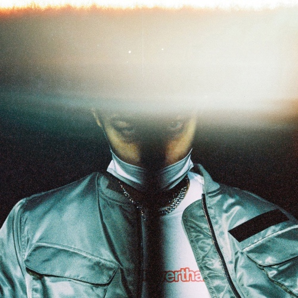
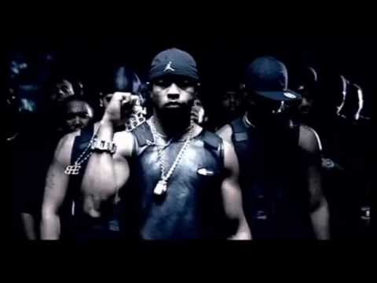

기리보이 - 호랑이소굴

기리보이와 재키와이가 같이 부른 노래입니다.
가사가 정말 와 닿는 것 같아요. 어딘가 가기 싫고 무서워도 꼭 가야하는
그런 배경을 가사에 잘 담아낸 곡인 것 같습니다!
Roy Jones - Can't Be Touched

저는 사실 힙합을 들을 때 대부분 빠른 비트와 가사의 표현력을 보곤 하는데
이 곡은
비트 부분에서 제 마음을 사로잡았습니다..
헬스장에서 들으면 힘이 끓어올라요 추천합니다!!
zico - 새삥